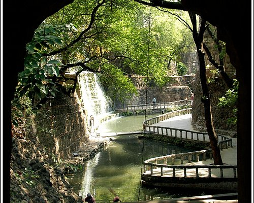
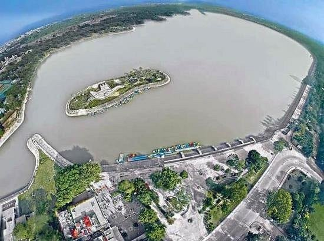
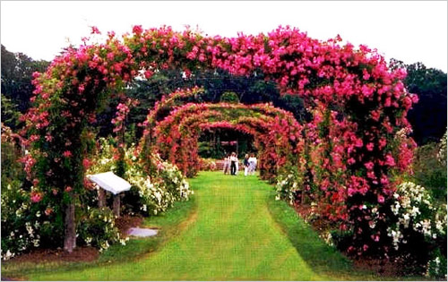
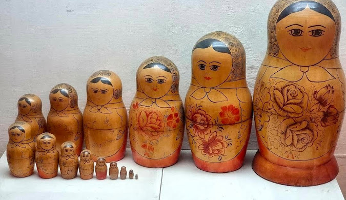

The rock garden
Best Time to Visit: October and March
For further informationvisit the site


Sukhna lake
Best Time to Visit: November to February
For further informationvisit the site

Leisure Valley Chandigarh
Best Time to Visit: February or March
For further informationvisit the site

Rose Graden
Best Time to Visit: February and April
For further informationvisit the site


Government Museum and Art Gallery Chandigarh
Best Time to Visit: November to March
For further information visit the site

International Dolls Museum Chandigarh
Best Time to Visit:Any Time
For further informationvisit the site